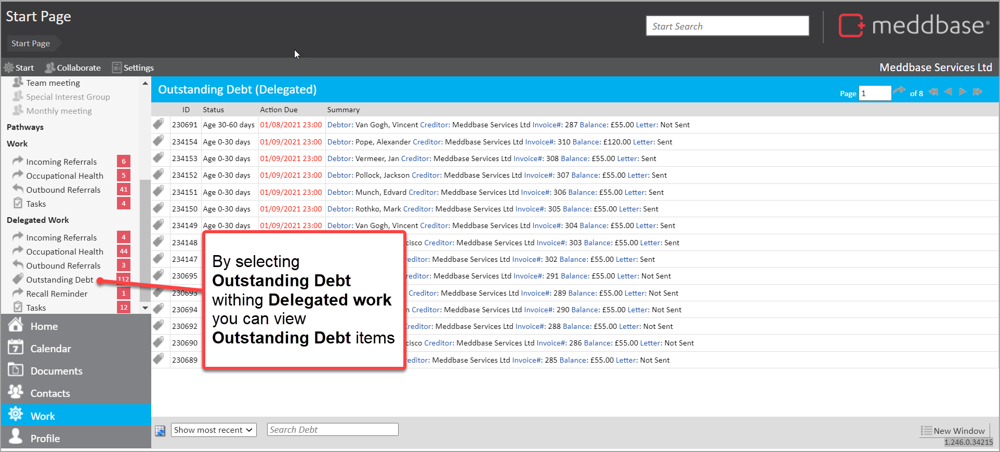

The Outstanding Debt feature in Delegated Work allows you to view and manage invoices with an outstanding balance.
This article:
To do this:
1. From the Start page, find Delegated Work
2. Select Outstanding Debt

To view and manage your outstanding debt you will need to be added to the user role group Debt Chase Admin. There is more information on role set up in the article Working with Debt Management.
There is a range of things you can see and do. They are similar to the features available for Debt Management.
To find out more, see Working with Debt Management.